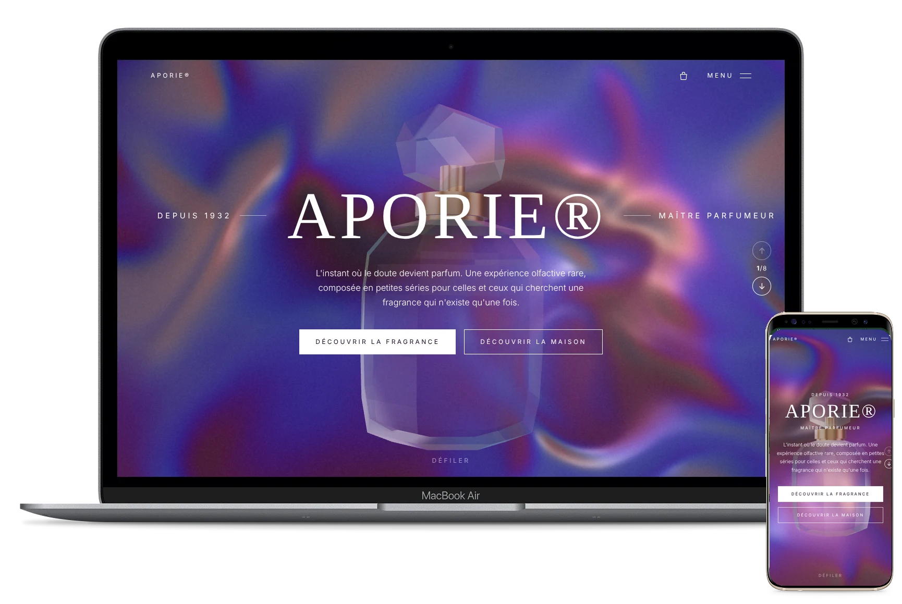
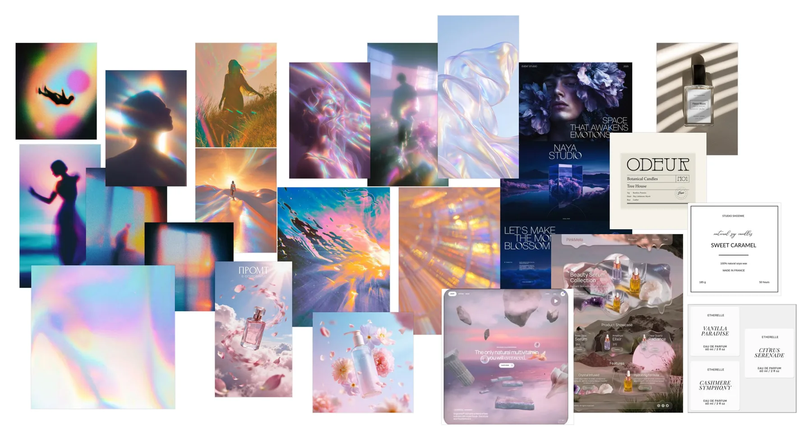
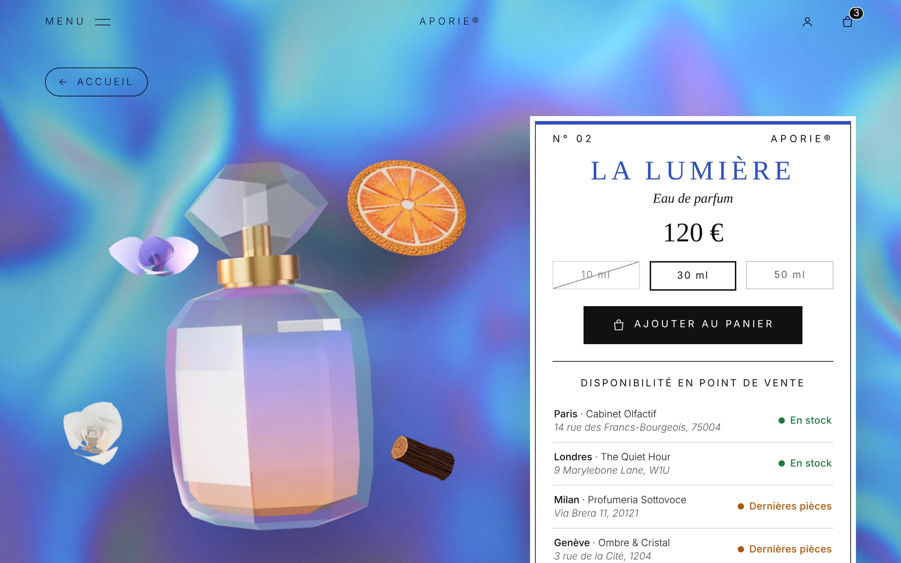
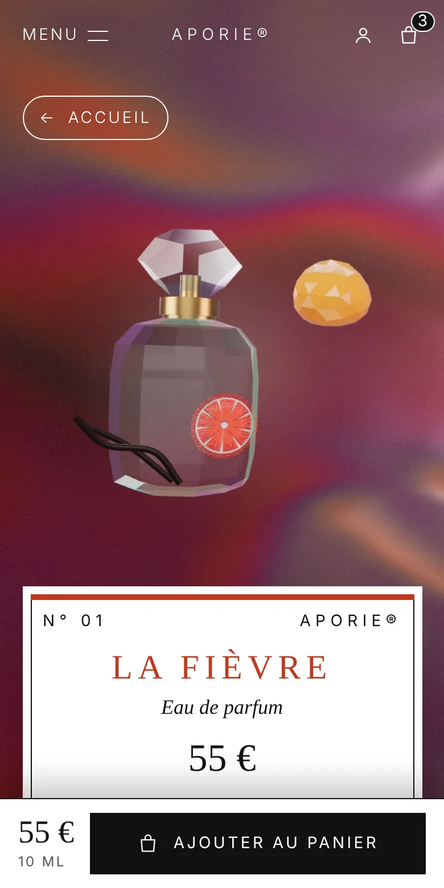
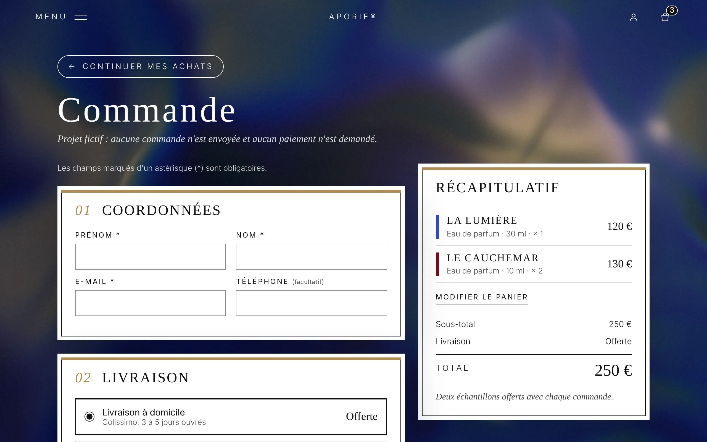
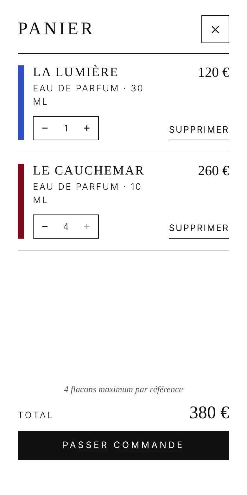

Camille
34 ans, directrice artistique
Un parfum, c'est une œuvre : je veux comprendre l'univers avant d'acheter.
Besoin clé
- Un univers cohérent et des notes lisibles.
Réponse du site
- Un fond et un flacon 3D qui portent l'univers.
UX/UI & Creative Dev Case Study
Projet fictif : concilier l'univers immersif d'une maison de parfum de niche et la rigueur d'un e-commerce. Marque, boutiques et contenus sont inventés.

Le brief écarte le beige, l'or et le minimalisme déjà vu : le visiteur doit entrer dans un univers, sans perdre l'information qui lui permet d'acheter.
Critère de chaque choix : surprendre des connaisseurs, et rester lisible et efficace jusqu'à la commande.
Quatre étapes, où chaque décision répond à un constat.
Quatre marques de parfum de niche comparées sur leur modèle, leur template, leur univers et leur fiche produit.
| Maisons de parfum | Modèle | Template | Univers de marque | Fiche produit |
|---|---|---|---|---|
| Contes de Parfums, Bu Feng, Sora Dora, Room1015 | E-commerce | Luxe « traditionnel » : épuré, blanc, minimaliste | Peu marqué | Image, nom, contenance, type, description, notes, ingrédients, prix |
| APORIE® |
E-commerce
Avec un accueil immersif |
Surprenant mais lisible
Fond holographique, étiquette blanche |
Marqué
Flacon 3D, éléments olfactifs |
Mêmes informations
Mieux ordonnées : achat d'abord, détails dans un accordéon |
Des connaisseurs sensibles à l'image d'une maison et à la rareté. Trois proto-personas issus du benchmark, à valider en entretien.
34 ans, directrice artistique
Un parfum, c'est une œuvre : je veux comprendre l'univers avant d'acheter.
41 ans, collectionneur
Si c'est rare, je veux le savoir, et pouvoir l'acheter tout de suite.
28 ans, photographe
Je découvre les maisons sur mon téléphone, par l'image.
Le site tient en quatre niveaux : un accueil immersif, une fiche par fragrance, un panier et une commande.
Deux raccourcis : le bouton panier sur l'étiquette, et « Les autres fragrances » en bas de chaque fiche.
Les informations des concurrents, dans l'ordre de la décision :
Une page en trois étapes (coordonnées, livraison ou retrait en boutique, paiement simulé), avec le récapitulatif toujours visible.
Quatre décisions et leur compromis.
| Décision | Pourquoi | Compromis assumé |
|---|---|---|
| Immersion à l'accueil, conversion sur la fiche |
Deux besoins, deux lieux
On vient pour l'univers, mais on achète sur une fiche complète. |
Deux modes de navigation
Une visite en 6 écrans, puis des pages classiques à faire cohabiter. |
| Les trois fragrances dans un carrousel |
Comparer sans quitter l'écran
Un glissement change de fragrance : le fond, le flacon et l'étiquette suivent. |
Un geste moins évident
Indication « Glisser » sur mobile, flèches, onglets et clavier en secours. |
| La rareté mise en scène |
Là où l'on décide
Stock par boutique et par contenance, 4 flacons maximum par référence. |
Une promesse à tenir
Les stocks affichés devront rester fiables. |
| L'accessibilité comme contrainte |
Lisible malgré le fond animé
Texte sur surface blanche, clavier, « réduire les animations » respecté. |
Un 3D exigeant
Site utilisable sans le 3D ; three.js reste à alléger. |
| Piste explorée | Pourquoi je l'ai écartée | Ce que j'ai retenu |
|---|---|---|
| Scroll natif long sur l'accueil |
Transitions inachevées
Il fallait plusieurs gestes pour passer d'une salle à l'autre. |
Un geste, une salle
Menu, boutons et clavier en secours. |
| Description longue et notes détaillées sur l'étiquette |
Trop dense sur mobile
Elle doublonne avec la fiche et cache le flacon. |
Étiquette courte
Une phrase et trois notes ; le détail vit sur la fiche. |
| Lettres dorées, codes du luxe |
Écartées par le brief
Elles rapprochent la marque de ses concurrents. |
Or réduit à des filets
Sur fonds sombres, retirable en une variable. |
Le rêve (dégradés holographiques, silhouettes à contre-jour) contre la rigueur (étiquettes sobres) : un fond onirique, une information nette, et une couleur d'accent par fragrance.




